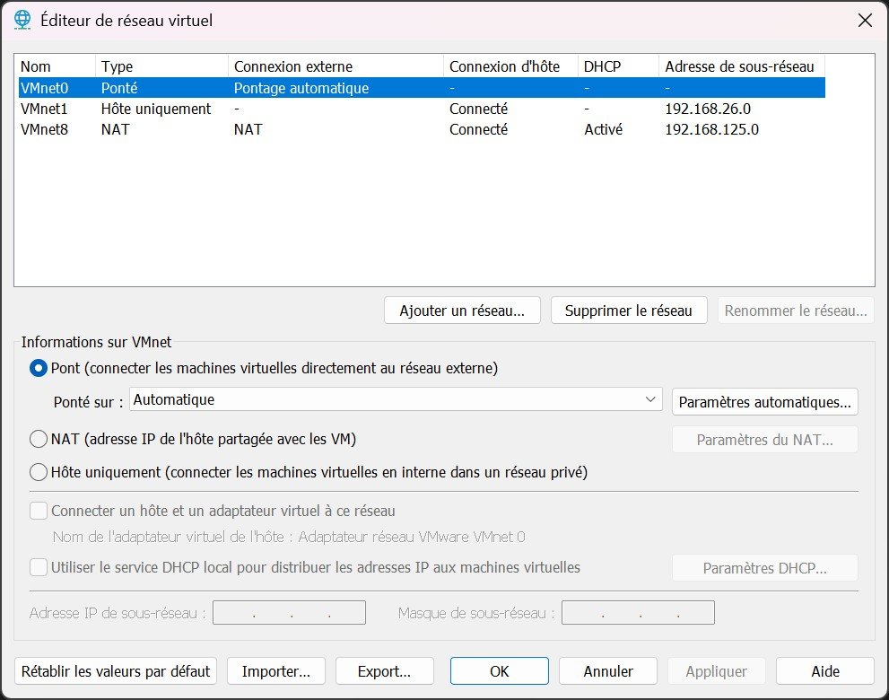
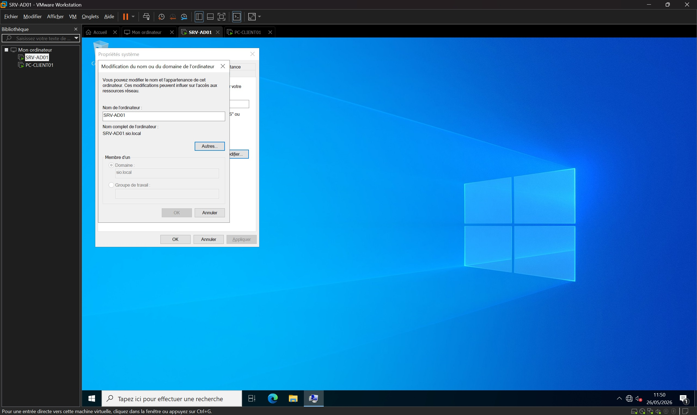
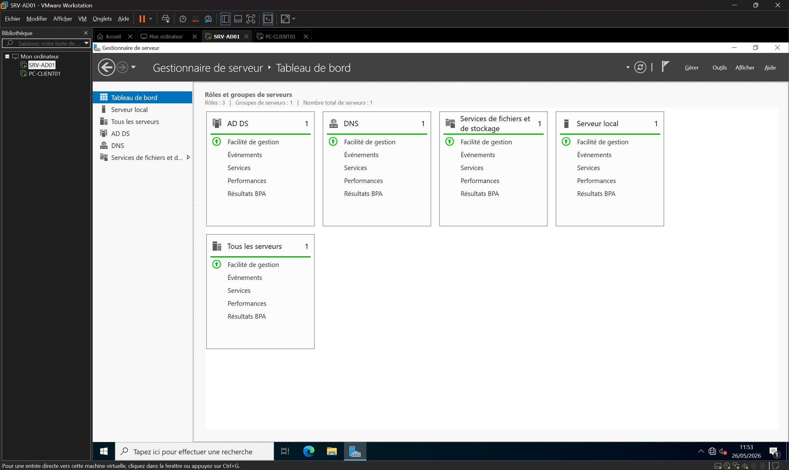
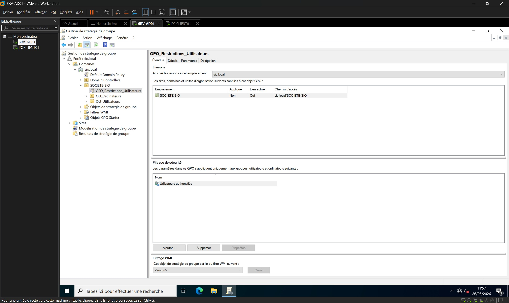
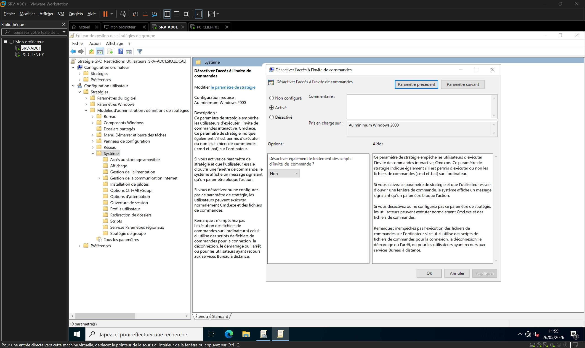
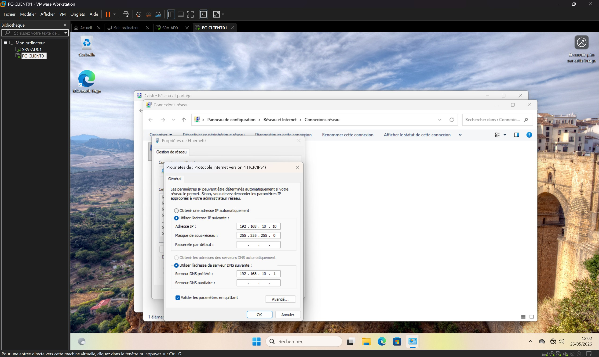

Dans le cadre de l'évolution du système d'information, j'ai conçu, déployé et sécurisé une infrastructure d'annuaire centralisée basée sur Active Directory Domain Services (AD DS) sous Windows Server 2022.
L'objectif était de remplacer l'administration locale décentralisée (modèle Workgroup) par une gestion centralisée des identités, des accès et des politiques de sécurité (GPO) pour l'ensemble du parc informatique.
Objectifs
Préparer et isoler l'environnement de virtualisation réseau.
Configurer l'adressage statique et le nommage du serveur.
Installer AD DS et promouvoir le contrôleur de domaine racine (sio.local).
Structurer la base NTDS (Unités d'Organisation, Groupes, Utilisateurs).
Déployer une Stratégie de Groupe (GPO) pour restreindre l'environnement de travail.
Intégrer une station Windows 11 au domaine et valider la recette technique.
Environnement technique
Hyperviseur : VMware Workstation Pro (Réseau Host-Only)
Serveur DC : Windows Server 2022 Standard (SRV-AD01)
Client : Windows 11 Professionnel (PC-CLIENT01)
Technologies : AD DS, DNS, Stratégies de groupe (GPO), Kerberos, LDAP
Étape 1 – Isolation de l'environnement réseau virtuel
Afin de garantir l'étanchéité absolue des futurs tests de recette, j'ai isolé la maquette sur un commutateur virtuel personnalisé (VMnet2) en mode Host-Only.
J'ai expressément décoché le service DHCP natif de l'hyperviseur pour éviter toute attribution d'adresse IP parasite lors du boot et du provisionnement de mes machines virtuelles.

Étape 2 – Nommage normalisé du serveur d'infrastructure
Une fois le système d'exploitation Windows Server 2022 déployé, j'ai accédé aux propriétés système avancées via la commande sysdm.cpl.
J'ai modifié le nom d'hôte généré aléatoirement par Windows pour définir le nom unique et normalisé SRV-AD01, suivi d'un redémarrage de contrôle.

Étape 3 – Configuration de l'adressage IP statique du serveur
Via l'interface réseau classique accessible par `ncpa.cpl`, j'ai affecté des paramètres IP fixes stricts à la carte réseau Ethernet du serveur.
J'ai saisi l'adresse IP 192.168.10.1 et forcé le serveur DNS préféré sur la boucle locale (127.0.0.1) afin de préparer l'hébergement de la future zone de recherche directe de l'annuaire.
Étape 4 – Installation du rôle des services de domaine Active Directory
Depuis le Gestionnaire de serveur, j'ai exécuté l'assistant d'ajout de rôles pour extraire et déployer les binaires logiques des services d'annuaire AD DS.
Cette action a automatiquement inclus l'installation conjointe des outils d'administration RSAT et du service de résolution de noms DNS intégré à Active Directory.

Étape 5 – Promotion du serveur et authentification d'autorité
J'ai configuré l'opération de déploiement en choisissant l'option "Ajouter une nouvelle forêt" pour initialiser le domaine racine sio.local.
Après l'exécution de l'assistant DCPromo et le reboot automatique, la mire de connexion s'est mise à jour, confirmant l'accès sécurisé sous l'identité de l'autorité du domaine : SIO\Administrateur.
Étape 6 – Structuration de l'annuaire et création des objets de sécurité
À l'aide de la console d'administration `dsa.msc`, j'ai créé une Unité d'Organisation (OU) de premier niveau nommée SOCIETE-SIO afin de structurer logiquement les ressources de l'entreprise.
Au sein de la sous-OU OU_Utilisateurs, j'ai généré le groupe global de sécurité G_Informatique et y ai associé le compte utilisateur de test dzanatta (Damien Zanatta).
Étape 7 – Création et liaison de la stratégie de groupe (GPO)
Depuis la console de gestion `gpmc.msc`, j'ai industrialisé la sécurité du parc en créant un objet d'infrastructure nommé GPO_Restrictions_Utilisateurs.
J'ai lié cet objet directement à l'OU parente SOCIETE-SIO afin de garantir l'application uniforme des futures directives par héritage sur l'ensemble des comptes enfants.

Étape 8 – Durcissement de la configuration dans l'éditeur de stratégie
J'ai édité la GPO en suivant le chemin sémantique : Configuration utilisateur > Stratégies > Modèles d'administration > Système.
J'ai configuré le paramètre "Empêcher l'accès à l'invite de commandes" sur l'état **Activé**, tout en maintenant le traitement des scripts à l'état non restrictif pour préserver l'exécution transparente des scripts de session légitimes.

Étape 9 – Configuration IP logique de la station cliente Windows 11
Sur la station de travail PC-CLIENT01, j'ai ouvert les propriétés TCP/IPv4 de la carte réseau afin d'aligner ses paramètres logiques sur notre architecture.
J'ai assigné l'IP statique 192.168.10.10 et renseigné de façon **impérative** l'adresse IP du contrôleur de domaine (192.168.10.1) comme serveur DNS unique de confiance.

Étape 10 – Validation de la connectivité réseau de bas niveau
Avant de solliciter l'annuaire, j'ai validé la parfaite communication entre les deux hôtes virtuels isolés sur le commutateur VMnet2.
Un test d'écho ICMP (`ping`) exécuté sous un profil d'administration local confirme une liaison de couche 3 fonctionnelle, rapide (latence inférieure à 1ms) et exempte de perte de paquets.
Étape 11 – Authentification de la session utilisateur auprès du domaine
Après avoir rattaché avec succès l'ordinateur au domaine via la localisation DNS de l'enregistrement SRV LDAP et opéré un redémarrage, j'ai accédé à la mire de sécurité.
J'ai sélectionné l'option de sécurité "Autre utilisateur" afin d'aiguiller la demande d'authentification vers l'autorité du domaine en saisissant les identifiants réseau du compte de test : SIO\dzanatta.
Étape 12 – Chargement du profil et initialisation de l'environnement utilisateur
Le protocole **Kerberos** a validé les jetons de sécurité et le service client a monté le profil utilisateur en téléchargeant les directives de stratégies stockées dans le dossier central **SYSVOL**.
L'ouverture complète du Bureau et la vérification du menu Démarrer attestent de l'identité nominale du compte de domaine actif : Damien Zanatta.
Étape 13 – Test de recette final et blocage de l'invite de commandes
Afin de valider la parfaite conformité de la recette technique par rapport au cahier des charges, j'ai provoqué l'ouverture d'un terminal en exécutant la commande `cmd`.
Les CSE (*Client-Side Extensions*) du système ont intercepté l'appel système et renvoyé le message de restriction attendu, matérialisant le succès absolu du déploiement de ma GPO.
Résultats obtenus
Mise en place d'un socle de virtualisation de test étanche.
Annuaire NTDS sécurisé et structuré par Unités d'Organisation.
Canal de confiance (Kerberos/LDAP) validé entre le DC et le poste de travail.
Déploiement et héritage réussis d'une politique de sécurité (GPO).
Compétences mobilisées
Gérer le patrimoine informatique (B1.1)
Nommage normalisé, adressage IP et structuration sémantique de l'annuaire.
Développer la présence en ligne (B1.3)
Documentation rigoureuse et publication de l'ingénierie système sur le portfolio web.
Concevoir une solution d'infrastructure réseau (B2.1)
Isolation d'un segment de réseau privé virtuel et dimensionnement des ressources.
Installer et déployer une infrastructure (B2.2)
Promotion d'un domaine Active Directory, intégration de station et résolution DNS.
Exploiter et sécuriser une infrastructure (B2.3)
Verrouillage des privilèges interactifs via le déploiement centralisé de Stratégies de Groupe (GPO).
Bilan personnel
Ce projet de déploiement marque une étape fondamentale dans mon apprentissage de l'administration des systèmes. Il m'a permis de comprendre empiriquement les mécanismes sous-jacents de la gouvernance informatique centralisée.
La capacité de gérer l'intégralité du cycle de vie des identités et de sécuriser un parc informatique sans avoir à intervenir localement sur chaque machine, démontre la puissance et la nécessité vitale d'Active Directory dans une infrastructure d'entreprise.